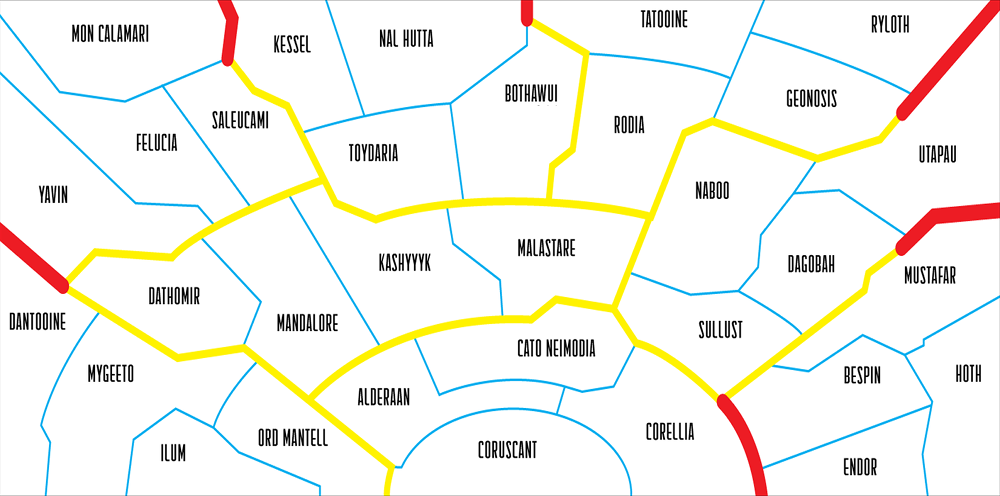

<div class="map-panel">
    
    <map name="image-map">
      <area id="mon-calamari-area" alt="Mon Calamari" title="Mon Calamari"
            coords="-1,0,-1,22,95,146,199,160,259,138,360,93,369,29,356,1" (click)="toggleArea('mon-calamari');" shape="poly">
    </map>
</div>
<div class="footer">
  <button class="confirmation-button">Confirm</button>
  <button class="cancel-button">Cancel</button>
</div>
